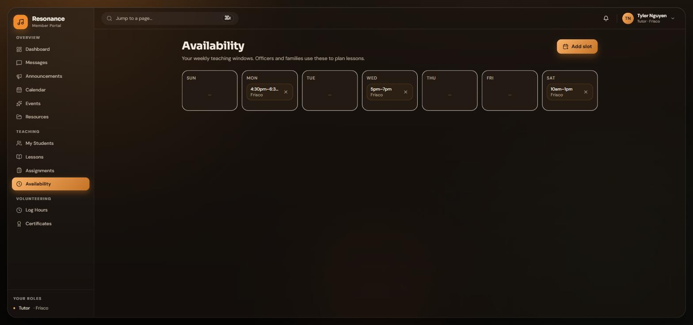
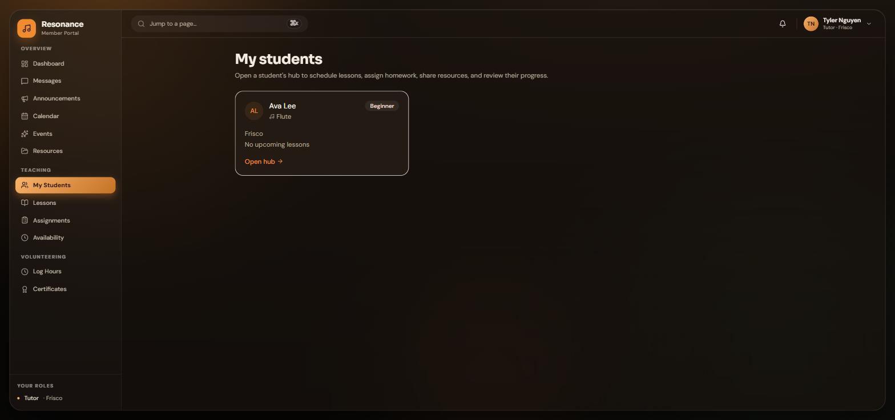
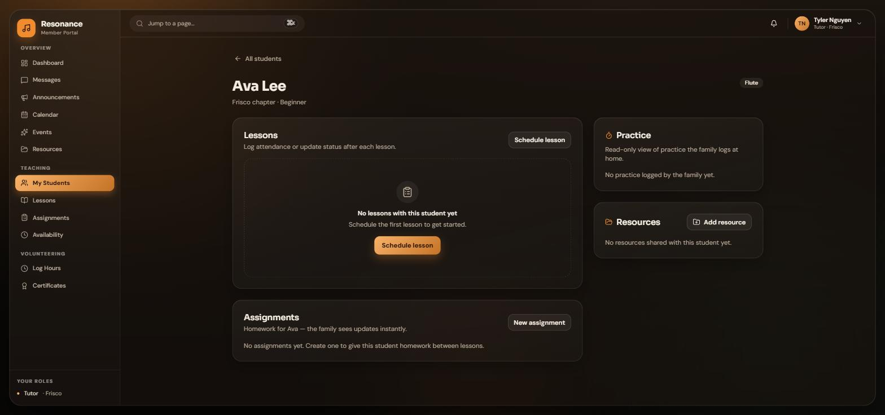
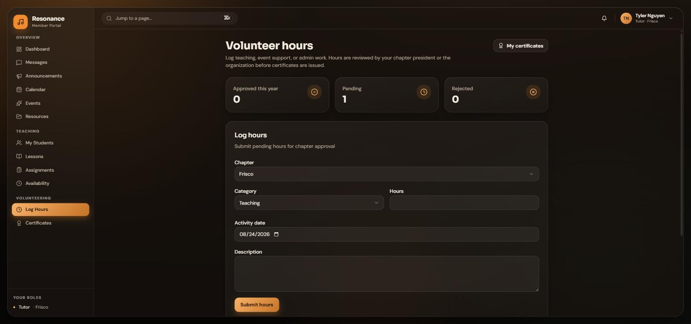

NO. RF-2026-TU
Portal Guide
The Tutor Guide
Your availability, your students, your lessons, and the volunteer hours you earn by teaching.
Tutors · theresonancefoundation.org
Your availability, your students, your lessons, and the volunteer hours you earn by teaching.
Everything starts with the Availability page. Families can only request lessons inside the windows you publish, so an accurate week means requests you can actually say yes to.

When a family requests one of your slots, you get a notification and the request appears in your queue. Accept it and the lesson is created for both sides, or decline with a short note so the family can pick another time. Answer quickly; families are waiting on you.
My Students lists everyone assigned to you, with their instrument and level. Each student has a hub where all of your teaching tools live.

Open a hub and you can do everything for that student in one place:

Tutoring with the Foundation is volunteer service. Log it, get it approved, and receive an official certificate you can use for school requirements and college applications.

If an entry is rejected, you get the reason and can log a corrected one. Nobody can approve their own hours, and certificates never expire or disappear from your account.
Questions or something broken? Email administrator@theresonancefoundation.org and a real person will get back to you.